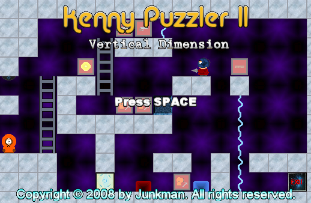
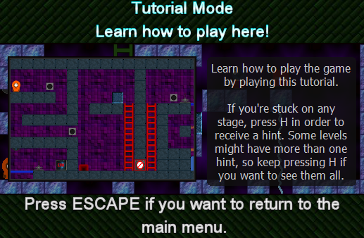
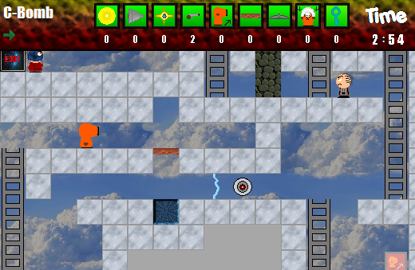

Kenny Puzzler 2
Junkman
Junkman's first new game in 3 years, Kenny Puzzler 2 is a sequel to his first game ever
released in the South Park Gaming community. Kenny is trapped once again in
an alternate dimension where mind-bending puzzles and deadly obstacles are the
norm. Armed with many skills and weapons like charge shots, drills, and jumping,
you must guide Kenny through 30 challenging levels which will put your wits
and skills to the test. The first full game of 2008!
2024 South Park Gaming